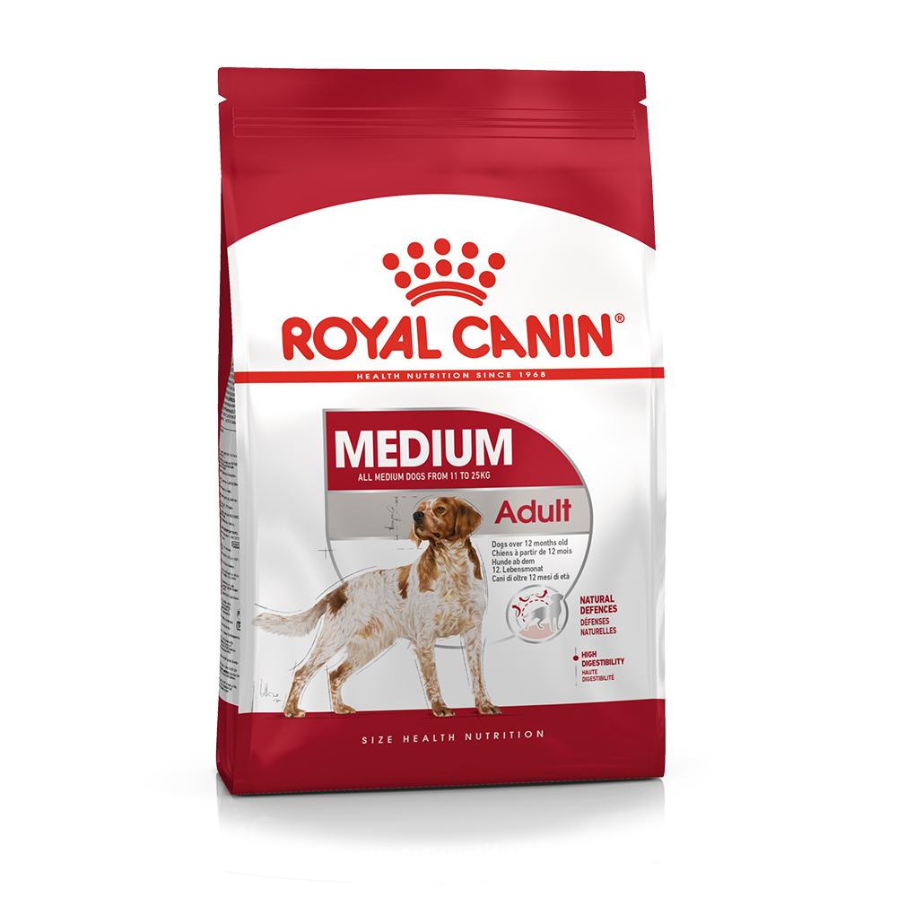

THỨC ĂN CHO CHÓ TRƯỞNG THÀNH
Thương hiệu: ROYAL CANIN | Tình trạng: Còn hàng
180.000đ
Thông tin cơ bản:
Thức ăn cho chó trưởng thành cỡ vừa ROYAL CANIN Medium Adult dành cho những chú chó trưởng thành 12 tháng tuổi trở lên. Với công thức đặc chế riêng cho nhu cầu dinh dưỡng của chó trưởng thành.
Số lượng sản phẩm:
MÔ TẢ CHI TIẾT
Thức ăn hạt cho chó trưởng thành cỡ vừa CANIN Medium Adult tạo thói quen ăn uống cho chó. Dựa theo tuổi của chó, cần cho ăn một ngày 3 lần vào các giờ cố định. Cho ăn tại một chỗ để tạo thói quen tốt cho chó. Nên cho chó ăn thức ăn chế biến riêng, không cho ăn thức ăn thừa của người. Vì thức ăn của người có nhiều thành phần khiến chó bị rối loạn tiêu hóa, dễ bị bệnh béo phì.
Hướng dẫn sử dụng:
- Bảo đảm cung cấp đủ nước uống cho chó. Nếu thấy nước bị chó làm bẩn, cần thay nước mới ngay lập tức.
- Khi muốn đổi thức ăn mới cho chó, có thể trộn lẫn thức ăn cũ và mới khi cho ăn.
- Tăng dần tỉ lệ trong vòng 7 ngày.
- Đột ngột thay đổi loại thức ăn mới có thể gây mất cân bằng hệ tiêu hóa. Chó dễ bị khó tiêu và đi ngoài.
- Công thức phân chia lượng thức ăn theo cân nặng tham khảo trên bao bì sản phẩm.
Hạn sử dụng:
18 tháng kể từ ngày sản xuất.ĐÁNH GIÁ SẢN PHẨM